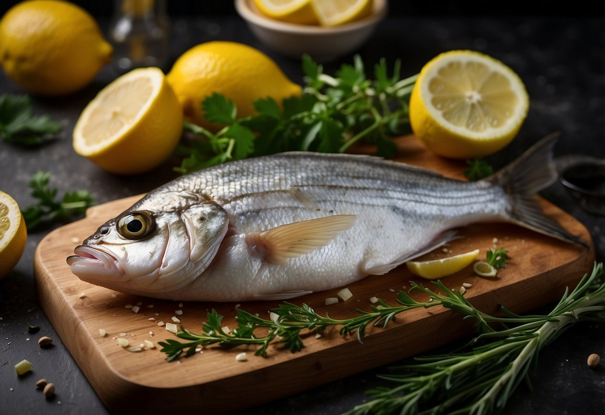
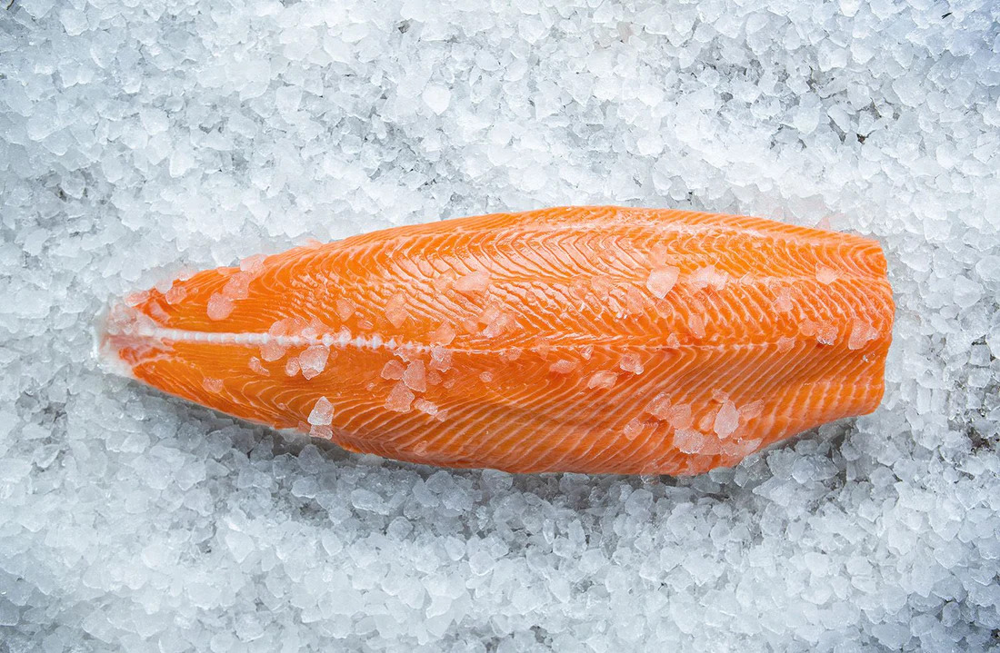

To reduce the fishy taste, soak seafood in milk for about 30 minutes before cooking, or use citrus like lemon to mask the odor.
Some great beginner-friendly seafood options include shrimp, tilapia, and salmon. These are easy to cook and flavorful.
Yes, frozen seafood can be substituted for fresh. Just make sure to properly thaw it before cooking.
